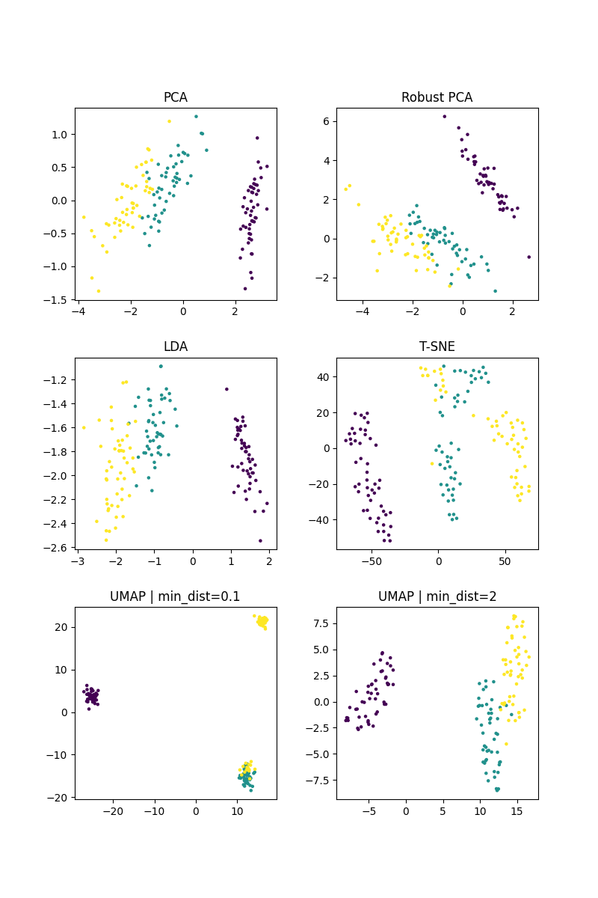
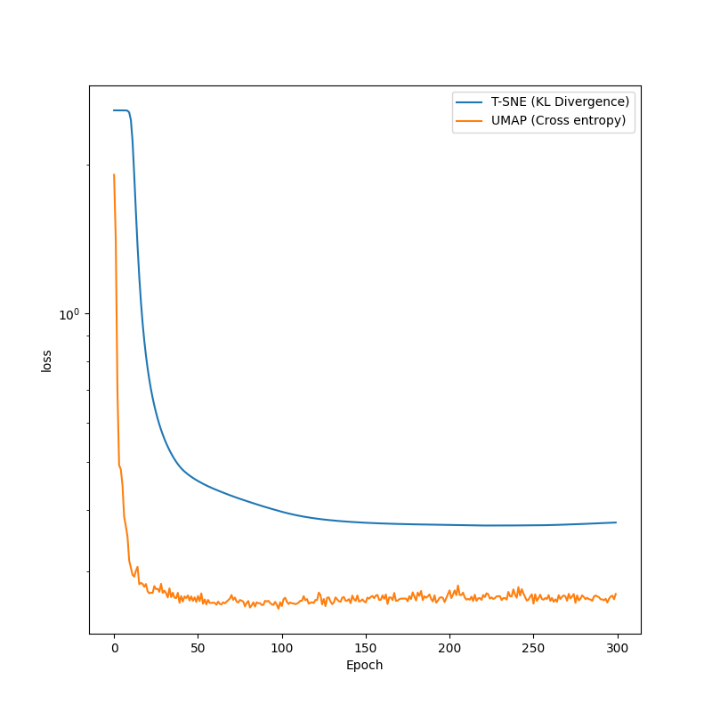

Note
Go to the end to download the full example code.
Comparison of dimensionality reduction algorithms
This script evaluates and visualizes various dimensionality reduction algorithms on the iris dataset. For each algorithm, a visualization of the latent space, which is used for comparison of the algorithms.
- 
- 
C:\Users\aatus\ohjelmointi\deep-learning-library\DLL\MachineLearning\UnsupervisedLearning\DimensionalityReduction\_UMAP.py:49: RuntimeWarning: divide by zero encountered in power
return 1 / (1 + a * d ** (2 * b))
import torch
import matplotlib.pyplot as plt
from sklearn import datasets
from DLL.MachineLearning.UnsupervisedLearning.DimensionalityReduction import PCA, LDA, RobustPCA, TSNE, UMAP
# import tensorflow as tf
# (images, labels), (_, _) = tf.keras.datasets.mnist.load_data()
# X = torch.from_numpy(images).to(dtype=torch.float64).reshape(60000, -1)
# y = torch.from_numpy(labels).to(dtype=torch.int32)
iris = datasets.load_iris()
X = torch.tensor(iris.data, dtype=torch.float32)
y = torch.tensor(iris.target, dtype=torch.float32)
# breast_cancer = datasets.load_breast_cancer()
# X = torch.tensor(breast_cancer.data, dtype=torch.float32)
# y = torch.tensor(breast_cancer.target, dtype=torch.float32)
transformer_pca = PCA(n_components=2)
reduced_pca = transformer_pca.fit_transform(X, normalize=False)
transformer_UMAP1 = UMAP(n_components=2, init="spectral", p=1, n_neighbor=30, min_dist=0.1, learning_rate=1)
reduced_UMAP1 = transformer_UMAP1.fit_transform(X, epochs=300)
transformer_lda = LDA(n_components=2)
reduced_lda = transformer_lda.fit_transform(X, y)
transformer_robustPCA = RobustPCA(n_components=2)
reduced_robustPCA = transformer_robustPCA.fit_transform(X, epochs=10)
transformer_TSNE = TSNE(n_components=2, init="random", p=2, early_exaggeration=1, perplexity=10)
reduced_TSNE = transformer_TSNE.fit_transform(X, epochs=50)
transformer_UMAP2 = UMAP(n_components=2, init="spectral", p=1, n_neighbor=30, min_dist=2, learning_rate=1)
reduced_UMAP2 = transformer_UMAP2.fit_transform(X, epochs=300)
fig, axes = plt.subplots(3, 2, figsize=(8, 12))
plt.subplots_adjust(hspace=0.3, wspace=0.3)
axes = axes.ravel()
axes[0].scatter(reduced_pca[:, 0], reduced_pca[:, 1], c=y, s=5)
axes[0].set_title("PCA")
axes[2].scatter(reduced_lda[:, 0], reduced_lda[:, 1], c=y, s=5)
axes[2].set_title("LDA")
axes[4].scatter(reduced_UMAP1[:, 0], reduced_UMAP1[:, 1], c=y, s=5)
axes[4].set_title("UMAP | min_dist=0.1")
axes[1].scatter(reduced_robustPCA[:, 0], reduced_robustPCA[:, 1], c=y, s=5)
axes[1].set_title("Robust PCA")
axes[3].scatter(reduced_TSNE[:, 0], reduced_TSNE[:, 1], c=y, s=5)
axes[3].set_title("T-SNE")
axes[5].scatter(reduced_UMAP2[:, 0], reduced_UMAP2[:, 1], c=y, s=5)
axes[5].set_title("UMAP | min_dist=2")
plt.figure(figsize=(8, 8))
plt.semilogy(transformer_TSNE.history, label="T-SNE (KL Divergence)")
plt.semilogy(transformer_UMAP2.history, label="UMAP (Cross entropy)")
plt.xlabel("Epoch")
plt.ylabel("loss")
plt.legend()
plt.show()
Total running time of the script: (0 minutes 8.134 seconds)